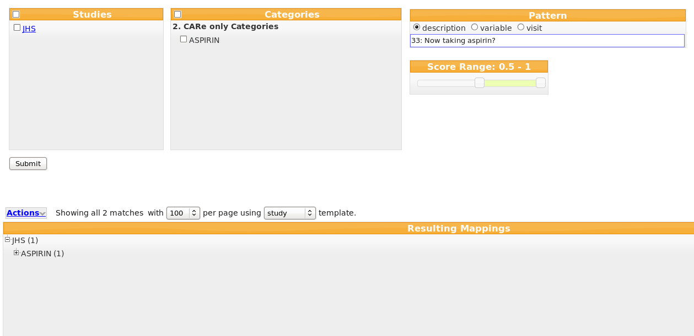
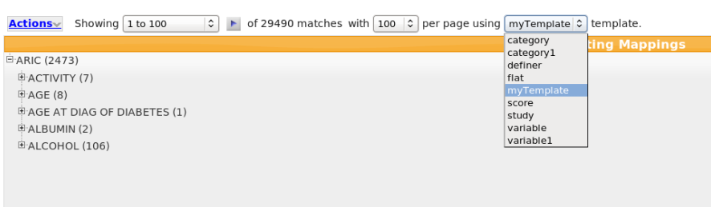
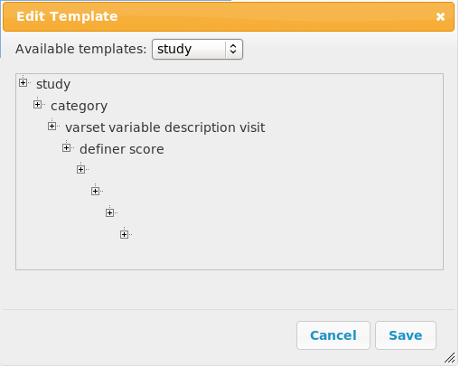
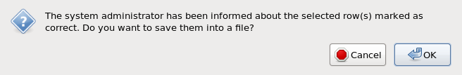

The query tool enables biomedical researchers to find epidemiologically comparable phenotypes across multiple studies. The user is first presented with the Login page (see Figure 1):
| Figure 1. |
Once he enters his credentials, he will be directed to the query page (see Figure 2):
| Figure 2. |
The query interface design provides four major dimensions for the query:
The user selects one or more studies of interest, one or more categories of interest, a score range, and/or inputs free form text (or makes no selections, which means no constraints in the dimensions). In Figure 2, the query returned 29490 matches having the score range [0.5 - 1].
The logical conjunction operator is applied between the four dimensions, while for the selections inside a study or category dimensions, the logical disjunction. For example, if the user selects the ARIC and CARDIA studies, the Age and Aspirin categories, and enters the pattern antibiotics, the query will return all the matches having the study equal to "ARIC" OR "CARDIA", AND the category equal to "Age" OR "Aspirin", AND the description containing the "antibiotics" substring.
The matching phenotype variables are displayed accordingly to a template. The predefined flat template displays the results in a tabular format, a convenient and familiar display for many users. The rest of the templates are displaying them hierarchically. For the study template, the number of variables for each study and category are also displayed.
The studies contain hyper-links, in which case, by clicking them, their corresponding web sites are opened. While the mouse is over a study, its full name is displayed in a tip box (see Figure 3 when the mouse is over the ARIC study).
| Figure 3. |
Once the mouse is over the Studies or Categories areas, it highlights them and you might now make one or multiple selections (see Figure 4, when the mouse is over the "Categories" area).
| Figure 4. |
Each time the user selects some studies of interest, the system automatically filters the category dimension to show only categories that contain variables from those studies. Similarly, when the user selects some category, the system automatically filters the studies query dimension to only show studies with phenotypes under such category.
For example, when the user selects the ANTI-PLATELET DRUGS category, the studies list is updated to CHS, FHS, MESA, as only these 3 studies have phenotypes under the ANTI-PLATELET DRUGS category. Also, the query results are updated showing now a total of only 21 matches for the ANTI-PLATELET DRUGS category (see Figure 5).
| Figure 5. |
Once the mouse leaves the Categories area, its list is updated to the selected categories (ANTI-PLATELET DRUGS in our example), and now you might perform additional selections. For example, if we select the CHS study, the query results will be updated, showing now a total of only 12 matches for the ANTI-PLATELET DRUGS category AND the CHS study (see Figure 6).
| Figure 6. |
Each time the mouse re-enters the categories/studies areas, it will show their available selections under the constraint of the studies/categories selections. For example, in Figure 7, the mouse re-enters the categories area, and its list shows now all the categories under the constraint "study equal to CHS".
| Figure 7. |
Supposing now we select the AGE AT DIAG OF DIABETES category, the query results will be updated, showing now a total of 14 matches for the category equal to ANTI-PLATELET DRUGS or to AGE AT DIAG OF DIABETES, and the study equal to CHS (see Figure 8).
|
|
|---|
| Figure 8. |
To select/deselect all the available studies or categories, check or uncheck the checkbox from the corresponding title (see Figure 9 for checking all the available categories).
| Figure 9. |
The user can also query by an input arbitrary text. First he has to select one of the domains (description, variable or visit). The system automatically suggests completions of the input text based on the existing phenotype descriptions, variables or visits. For example in Figure 10, the user selects the description domain and starts typing "aspirin". As s/he types, suggestions such as "33: Now taking aspirin?" or "34a: Strength of aspirin in the pill" appear under the search box.
| Figure 10. |
The user does not necessarily need to choose from those suggestions. In Figure 11, s/he simply finishes typing "aspirin", clicks the Submit button and retrieves the 235 matching phenotypes.
| Figure 11. |
Alternatively, in Figure 12 the user accepts one of the suggestions "33: Now taking aspirin?", clicks the Submit button, and finds out 2 matches that contain a phenotype mapped to such a description.
|  |
|---|
| Figure 12. |
The user can also query by selecting a score range. He moves a slider until he gets the desired score range and then s/he clicks the Submit button. The score measures the confidence of a mapping phenotype. It has a value between 0 and 1. By default, the system returns the mappings with the score range [0.5 - 1]. In Figure 13, s/he selects the [0.75 - 1] score range, clicks the Submit button and retrieves the 22696 matching phenotypes.
| Figure 13. |
Information regarding the usage of the dimensions can be obtained when the mouse pointer is over its title. A tip text box will be displayed with usage instructions. For example, Figure 14 shows the usage instructions for the Category dimension.
| Figure 14. |
Rather than showing all the results at a time, the interface allows the user to page throw a selectable number of matches at a time (see Figure 15).
| Figure 15. |
The and
 buttons are for navigation to the
previous, respectively next page. They are visible only if such pages exit. For example, the
button will not be present if the first page
is displayed, and the will not be
present if the last page is displayed.
buttons are for navigation to the
previous, respectively next page. They are visible only if such pages exit. For example, the
button will not be present if the first page
is displayed, and the will not be
present if the last page is displayed.
You can set the number of matches per page through a drop-down list (see Figure 16). Seven values are available in this respect: 10, 25, 50, 100, 500, 1000 and 5000.
| Figure 16. |
You can navigate directly to a page by selecting a range of matches from a drop-down list (see Figure 17).
| Figure 17. |
There are available up to 20 adiacent pages. Always, you might access the first page (see Figure 17) and the last page (see Figure 18).

|
|---|
| Figure 18. |
The matches are displayed in a structure using a template. You select the template from a drop-down list (see Figure 19):
| Figure 19. |
The flat template displays the matches in a tabular format, while the rest of the templates in a tree format. For example, the category template uses the following structure:
while the study template uses the structure:
You have also the option to edit exiting templates or to define new templates through the Actions menu.
The flat template allows flexible results display in the style of spreadsheets (Figure 20).
| Figure 20. |
The user can select the number of displayed entries per page (10, 25, 50, 100, 500, 1000, 5000 or All) and can navigate through the pages (First, Previous, Next, Last) and up to 5 adiacent pages (see Figure 21):
| Figure 21. |
The user can also sort (ascending or descending) the entries based on the column values by clicking a column name. Figure 22 shows the variable column sorted in ascending mode:

|
|---|
| Figure 22. |
while Figure 23 shows the variable column sorted in descending mode.
| Figure 23. |
Individually entries can be selected in a page-by-page basis using a check-box metaphor. This selection capability enables further processing of the mappings. Currently, we have implemented two actions with the selected entries:
Once you click the Actions menu, the following commands are available (see Figure 24):
| Figure 24. |
Once you select the New template... command from the Actions menu, the following window shows up (see figure 25):
| Figure 25. |
By drag and drop operations, you might now change the position of any element in the tree structure. For example, let's suppose we want to move visit after score. First, we drag visit. Once the dragging operation starts, the visit element remains highlighted in its original location, and a clone of it follows the mouse position (see Figure 26).
| Figure 26. |
We can drop it in any part of the tree structure. If no droppable element is highlighted, then it will be inserted in the first position of the droppable level. For example, Figure 27 shows the new tree structure when visit was dropped.

|
|---|
| Figure 27. |
If a droppable element is highlighted during the drag operation, then the element will be dropped after that highlighted droppable element. For example, in Figure 28, the score is highlighted:
| Figure 28. |
If we drop visit now, it will be inserted after score (see Figure 29).
| Figure 29. |
A droppable element is highlighted if the draggable overlaps the droppable at least 50%.
Once you are done with the template structure, you provide a name for the new template and click the Save button (see Figure 30).
| Figure 30. |
The new template will be present now in the list of available templates (see Figure 31).
|  |
|---|
| Figure 31. |
Once you select the Edit template... command from the Actions menu, the following window shows up (see Figure 32):
| Figure 32. |
From the drop-down list of available templates, you select now the template you want to modify (see Figure 33).
| Figure 33. |
Supposing you have selected study, its tree structure will be displayed (see Figure 34).
|  |
|---|
| Figure 34. |
You might change its structure using the drag and drop operations as described in Defining a New Template. Once you are done with the changes, you click the Save button and its new structure will be used in displaying the query results.
Once you select the Save all results... command from the Actions menu, you might save the query results in a spreadsheets style into a file. The default file name is Results.txt. A File Browser opens and you might choose the location and/or the file name (see Figure 35):
| Figure 35. |
In Figure 36, you might see the content of the saved file:
| Figure 36. |
With the flat template, it is also possible to save only the selected entries by the check-boxes. In that case, the user selects the Save selected result(s)... command from the Actions menu, and the default file name is SelectedResults.txt.
Information regarding the meaning of the query results values in a tree structure can be obtained by clicking a value. A tip text box will be displayed with the name it represents. Once the mouse leaves the value area, the tip box will be hidden. For example, in Figure 37, we clicked the value "0.5921" (the last item in the concatenated string) and the tip text indicates it represents a score value.
| Figure 37. |
Each user can bookmark a query of interest for later usage, similar to bookmarking pages in a web browser. When the Bookmark Query... command is selected from the Actions menu, a pop-up window shows up for the bookmark name (see Figure 38).
| Figure 38. |
The bookmarked queries can be seen by clicking the Bookmarks link from the top menu (see Figure 39). The bookmarks are available only to the user who created them. A detailed description of the query (the dimensions and values queried) as well as a timestamp with the bookmark creation time are available. By clicking the link of a bookmark, the user gets the same results as when the bookmark was created.
| Figure 39. |
A query history is kept during each user session. Figure 40 shows the page with the history of the queries. It can be accessed by clicking the History link of the top menu. The most recent queries are displayed at the top. Like in the bookmark page, a query description is available. By clicking the link of a query number, the user gets the same results as when the query was submitted. The distinction between query bookmarks and query history is again inspired by web browsers. A query bookmark is created by an explicit user action and it persists until deleted by the user. The query history is maintained automatically by the system and is truncated at some point based on storage limitations or other considerations.

|
|---|
| Figure 40. |
A user can also save a query in a file, either to keep a local copy on their own computer for later loading or to share queries with other users. The mechanism works in a simple and robust manner. First, the user exports a query into a file. He selects in this respect the Export Query... command from the Actions menu. A File Browser opens and you might choose the location and/or the file name (see Figure 41). The default file name is Query.txt.
| Figure 41. |
Then, s/he shares that file with another user (by emailing the query file as an attachment, or any other file-sharing means). The receiving user imports the query into their PhenoExplorer session by selecting the Import Query... command from the Actions menu. A File Browser opens and you might choose the location and the file name (see Figure 42):
| Figure 42. |
The same results are displayed as when the query was exported. It is important that the content of the exported file should not be modified, as otherwise the Import Query... operation might fail.
With the flat template, the selected entries by the check-boxes, might be marked as correct or incorrect. In that case, the user selects the Mark selected row(s) as correct... or Mark selected row(s) as incorrect... commands from the Actions menu. User feedback on the correctness of a mapping is stored in our database and is used for further refinement and training of the learning algorithm. Optional, the user can save these entries into a file. A pop-up windows shows up (see Figure 43 for the Mark selected row(s) as correct... command):
|  |
|---|
| Figure 43. |
If the users answers with OK, a File Browser opens and you might choose the location and/or the file name. The default file name is SelectedResults.txt.
Once the user clicks the Logout link of the top menu, s/he is logged out and redirected to the Login page.